element2lattice
Below is a demonstration of the features of the element2lattice function
Contents
- Syntax
- Description
- Examples
- Example: Creating a lattice structure on a hexahedral element
- Example: Different lattice sides
- Example: Refining the lattice structure
- Example: Creating a lattice structure on tetrahedral elements
- Example: Different lattice sides
- Example: Changing lattice strut thickness (and porosity)
- Example: Changing output surface mesh type
- Example: Exporting hexahedral elements instead of surface elements
- Example: Creating lattice structure variations through input mesh conversion/subdevission
- Example: Create lattice structures on arbitry input meshes
clear; close all; clc;
Syntax
[Es,Vs,Cs]=element2lattice(E,V,cPar);
Description
This function converts an element description (elements and vertices i.e nodes into a lattice structure. The lattice structure is returned as a hexahederal mesh.
Examples
Plot settings
cMap=gjet(4); fontSize=15;
Example: Creating a lattice structure on a hexahedral element
Creating example geometry.
boxDim=[1 1 1]; boxEl=[1 1 1]; [meshStruct]=hexMeshBox(boxDim,boxEl); E=meshStruct.E; V=meshStruct.V; F=meshStruct.F; [indBoundary]=tesBoundary(F,V);
Create lattice structure
controlParameter.shrinkFactor=0.2; %Strut sides are formed by shrinking the input mesh faces by this factor controlParameter.numDigitKeep=5; %used for merging nodes controlParameter.meshType='quad'; %desired output mesh type controlParameter.indBoundary=indBoundary; %indices of the boundary faces controlParameter.latticeSide=1; %1=side 1 the edge lattice, 2=side 2 the dual lattice to the edge lattice [Fs1,Vs1,Cs1]=element2lattice(E,V,controlParameter); %Get lattice structure
Visualizing input mesh and lattice structures
cFigure; title('An edge lattice structure on a hexahedral element','fontSize',fontSize) hold on; hp1=gpatch(F,V,0.5*ones(1,3),'k',0.25,4); hp2=gpatch(Fs1(Cs1==0,:),Vs1,Cs1(Cs1==0)); hp3=gpatch(Fs1(Cs1==1,:),Vs1,Cs1(Cs1==1)); legend([hp1,hp2,hp3],'Input mesh','Inner faces','Boundary faces') colormap(cMap); cLim=caxis; axisGeom(gca,fontSize); camlight headlight; lighting flat; drawnow;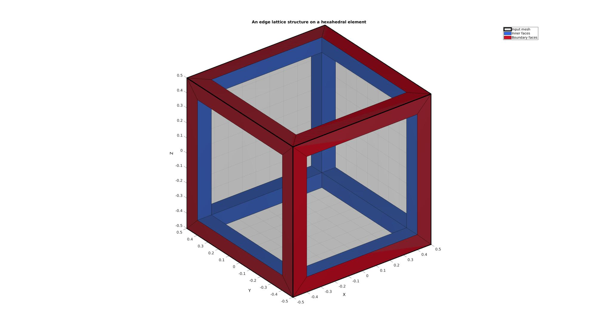
Example: Different lattice sides
Computer other "lattice side"
controlParameter.latticeSide=2; %1=side 1 the edge lattice, 2=side 2 the dual lattice to the edge lattice [Fs2,Vs2,Cs2]=element2lattice(E,V,controlParameter); %Get lattice structure
Visualizing input mesh and lattice structures
cFigure; hs=subplot(2,2,1); title('The input mesh','fontSize',fontSize) hold on; gpatch(F,V,0.5*ones(1,3),'k',0.25,3); axisGeom(gca,fontSize); camlight headlight; lighting flat; ha=axis; axis off; subplot(2,2,2); title('The two complementary lattice structures','fontSize',fontSize) hold on; gpatch(F,V,0.5*ones(1,3),'k',0.25,3); gpatch(Fs1,Vs1,Cs1); gpatch(Fs2,Vs2,Cs2); colormap(cMap); cLim=caxis; axisGeom(gca,fontSize); camlight headlight; lighting flat; axis(ha); axis off; subplot(2,2,3); title('Lattice side 1','fontSize',fontSize) hold on; gpatch(F,V,0.5*ones(1,3),'k',0.25,3); gpatch(Fs1,Vs1,Cs1); colormap(cMap); caxis(cLim); axisGeom(gca,fontSize); camlight headlight; lighting flat; axis(ha); axis off; subplot(2,2,4); title('Lattice side 2','fontSize',fontSize) hold on; gpatch(F,V,0.5*ones(1,3),'k',0.25,3); gpatch(Fs2,Vs2,Cs2); colormap(cMap); caxis(cLim); axisGeom(gca,fontSize); camlight headlight; lighting flat; axis(ha); axis off; drawnow;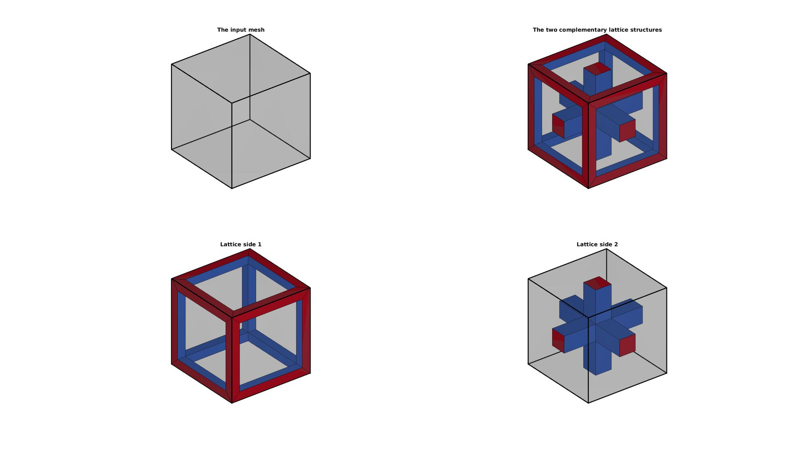
Example: Refining the lattice structure
Refining a lattice structure by first refining the input mesh
cFigure; gtitle('Lattice structure refinement',fontSize); for q=1:4 if q>1 [E,V]=subHex(E,V,1); %Refine input mesh [F]=element2patch(E); %Patch data for plotting [indBoundary]=tesBoundary(F,V); controlParameter.indBoundary=indBoundary; %indices of the boundary faces end [Fs1,Vs1,Cs1]=element2lattice(E,V,controlParameter); %Get lattice structure % Visualizing input mesh and lattice structures subplot(2,2,q); hold on; title(['Split iteration ',num2str(q)]); gpatch(Fs1,Vs1,Cs1); colormap(cMap); axisGeom(gca,fontSize); camlight headlight; lighting flat; end drawnow;


Example: Creating a lattice structure on tetrahedral elements
Creating example geometry.
[V,~]=platonic_solid(1,1); %A single tetrahedron E=[2 3 4 1]; %The element description [E,V]=subTet(E,V,1); %Refine the tetrahedron once [F]=element2patch(E); %Patch data for plotting [indBoundary]=tesBoundary(F,V); %Get boundary face indices
Create lattice structure
controlParameter.shrinkFactor=0.2; %Strut sides are formed by shrinking the input mesh faces by this factor controlParameter.numDigitKeep=5; %used for merging nodes controlParameter.meshType='quad'; %desired output mesh type controlParameter.indBoundary=indBoundary; %indices of the boundary faces controlParameter.latticeSide=1; %1=side 1 the edge lattice, 2=side 2 the dual lattice to the edge lattice [Fs1,Vs1,Cs1]=element2lattice(E,V,controlParameter); %Get lattice structure
Visualizing input mesh and lattice structures
cFigure; title('An edge lattice structure on a hexahedral element','fontSize',fontSize) hold on; hp1=gpatch(F,V,0.5*ones(1,3),'k',0.25,4); hp2=gpatch(Fs1(Cs1==0,:),Vs1,Cs1(Cs1==0)); hp3=gpatch(Fs1(Cs1==1,:),Vs1,Cs1(Cs1==1)); legend([hp1,hp2,hp3],'Input mesh','Inner faces','Boundary faces') colormap(cMap); cLim=caxis; axisGeom(gca,fontSize); camlight headlight; lighting flat; drawnow;

Example: Different lattice sides
Computer other "lattice side"
controlParameter.latticeSide=2; %1=side 1 the edge lattice, 2=side 2 the dual lattice to the edge lattice [Fs2,Vs2,Cs2]=element2lattice(E,V,controlParameter); %Get lattice structure
Visualizing input mesh and lattice structures
cFigure; hs=subplot(2,2,1); title('The input mesh','fontSize',fontSize) hold on; gpatch(F,V,0.5*ones(1,3),'k',0.25,3); axisGeom(gca,fontSize); camlight headlight; lighting flat; ha=axis; axis off; subplot(2,2,2); title('The two complementary lattice structures','fontSize',fontSize) hold on; gpatch(F,V,0.5*ones(1,3),'k',0.25,3); gpatch(Fs1,Vs1,Cs1); gpatch(Fs2,Vs2,Cs2); colormap(cMap); cLim=caxis; axisGeom(gca,fontSize); camlight headlight; lighting flat; axis(ha); axis off; subplot(2,2,3); title('Lattice side 1','fontSize',fontSize) hold on; gpatch(F,V,0.5*ones(1,3),'k',0.25,3); gpatch(Fs1,Vs1,Cs1); colormap(cMap); caxis(cLim); axisGeom(gca,fontSize); camlight headlight; lighting flat; axis(ha); axis off; subplot(2,2,4); title('Lattice side 2','fontSize',fontSize) hold on; gpatch(F,V,0.5*ones(1,3),'k',0.25,3); gpatch(Fs2,Vs2,Cs2); colormap(cMap); caxis(cLim); axisGeom(gca,fontSize); camlight headlight; lighting flat; axis(ha); axis off; drawnow;

Example: Changing lattice strut thickness (and porosity)
The strut thickness of the lattice depends on the shrinkfactor.
% Create lattice structure controlParameter.numDigitKeep=5; %used for merging nodes controlParameter.meshType='quad'; %desired output mesh type controlParameter.indBoundary=indBoundary; %indices of the boundary faces shrinkFactorSet=linspace(0.1,0.5,4); for latticeSide=1:2 controlParameter.latticeSide=latticeSide; cFigure; gtitle('Lattice structure porosity control',fontSize); for q=1:4 controlParameter.shrinkFactor=shrinkFactorSet(q); %Strut sides are formed by shrinking the input mesh faces by this facto [Fs1,Vs1,Cs1]=element2lattice(E,V,controlParameter); %Get lattice structure % Visualizing input mesh and lattice structures subplot(2,2,q); hold on; title(['Shrink factor ',num2str(pround(shrinkFactorSet(q),3))]); gpatch(Fs1,Vs1,Cs1); colormap(cMap); axisGeom(gca,fontSize); camlight headlight; lighting flat; end drawnow; end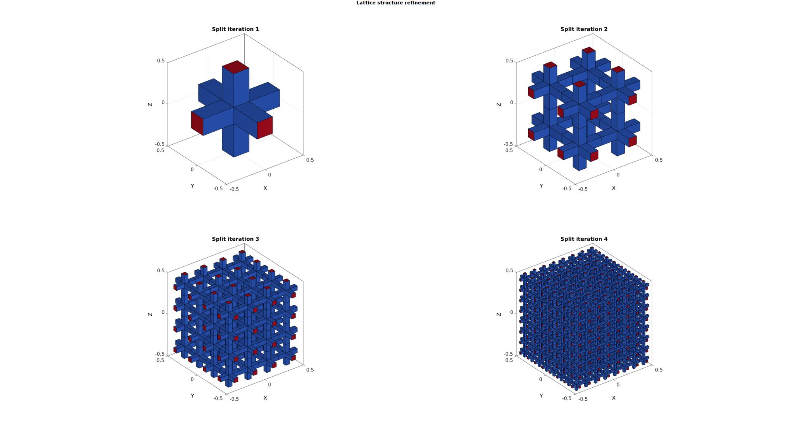 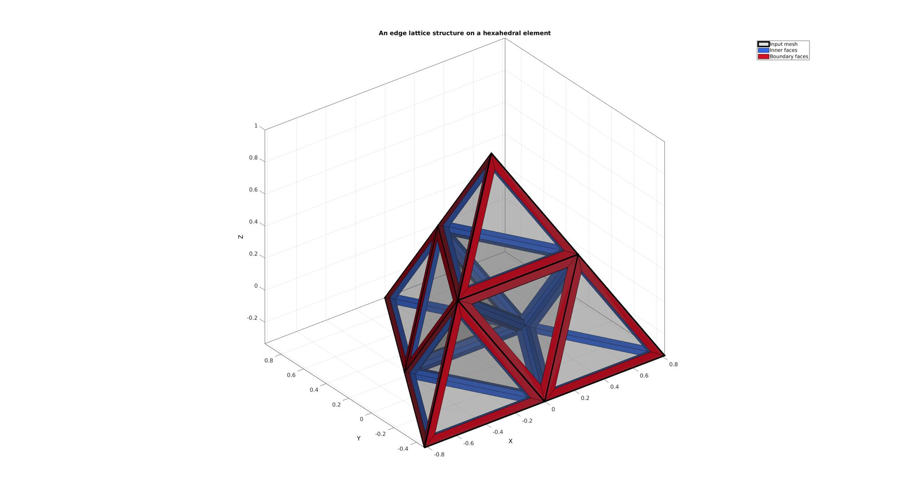 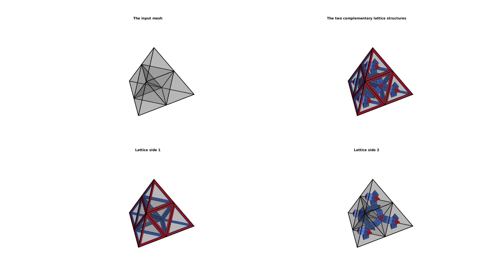 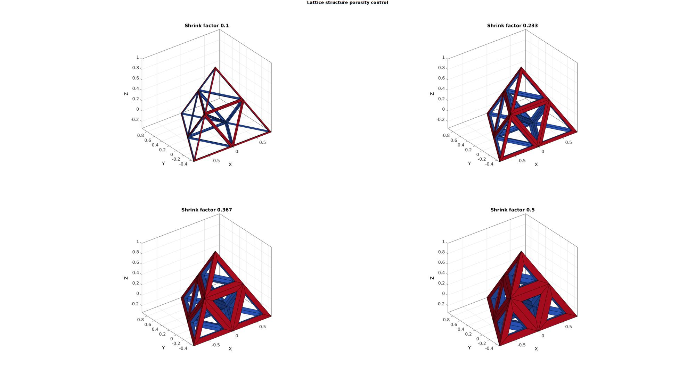

Example: Changing output surface mesh type
Different output mesh types are available i.e. quadrilateral and triangular faces and also hexahedral elements.
meshTypeSet={'quad','tri'};
boxDim=[1 1 1];
boxEl=[1 1 1];
[meshStruct]=hexMeshBox(boxDim,boxEl);
E=meshStruct.E;
V=meshStruct.V;
F=meshStruct.F;
[indBoundary]=tesBoundary(F,V);
clear controlParameter
% Create lattice structure
controlParameter.latticeSide=2;
controlParameter.numDigitKeep=5; %used for merging nodes
controlParameter.indBoundary=indBoundary; %indices of the boundary faces
controlParameter.shrinkFactor=0.3;
cFigure;
gtitle('Lattice structure mesh output type control',fontSize);
for q=1:numel(meshTypeSet)
controlParameter.meshType=meshTypeSet{q}; %The current mesh type
[Fs1,Vs1,Cs1]=element2lattice(E,V,controlParameter); %Get lattice structure
% Visualizing input mesh and lattice structures
subplot(1,numel(meshTypeSet),q);
hold on; title(['Mesh type ',meshTypeSet{q}]);
gpatch(Fs1,Vs1,Cs1,'k',0.8,2);
colormap(gjet(250));
axisGeom(gca,fontSize);
camlight headlight; lighting flat;
end
drawnow;
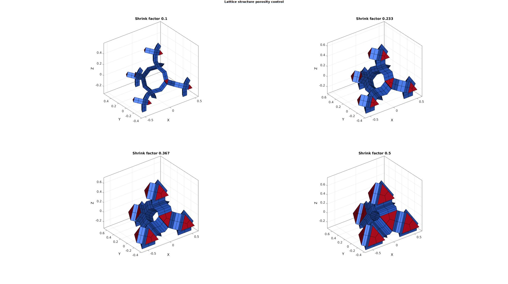 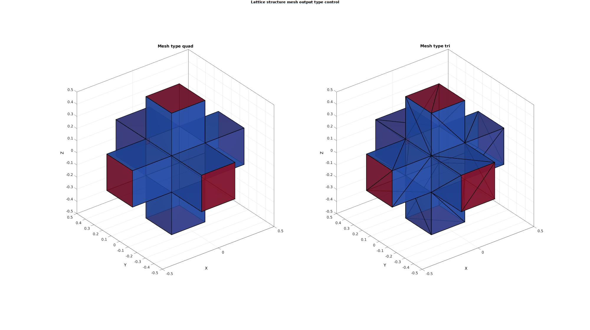 Example: Exporting hexahedral elements instead of surface elements
The element2patch function can also be used to export hexahedral elements directly by setting the meshType parameter to 'hex'. Furthermore, it is possible to subdevide the ellongated hexahedral elements using a certain number of split iterations. Below is an example of hexahedral element output with increasing number of split iterations used for the ellongated hexahedral elements.
boxDim=[1 1 1]; boxEl=[1 1 1]; [meshStruct]=hexMeshBox(boxDim,boxEl); E=meshStruct.E; V=meshStruct.V; F=meshStruct.F; [indBoundary]=tesBoundary(F,V); clear controlParameter % Create lattice structure controlParameter.latticeSide=2; controlParameter.numDigitKeep=5; %used for merging nodes controlParameter.indBoundary=indBoundary; %indices of the boundary faces controlParameter.shrinkFactor=0.25; controlParameter.meshType='hex'; hexSplitSet=[0 1 2]; cFigure; gtitle('Lattice structure hex element output and element mesh refinement',fontSize); c=1; %counter for plotting for latticeSide=1:2 controlParameter.latticeSide=latticeSide; for q=1:numel(hexSplitSet) controlParameter.hexSplit=hexSplitSet(q); %The current mesh type [Es1,Vs1,Cs1]=element2lattice(E,V,controlParameter); %Get lattice structure [Fs1,Cs1F]=element2patch(Es1,Cs1); %Patch data for plotting % Visualizing input mesh and lattice structures subplot(2,numel(hexSplitSet),c); hold on; title(['hexSplit=',num2str(hexSplitSet(q))]); gpatch(Fs1,Vs1,Cs1F,'k',0.8,2); colormap(gjet(250)); axisGeom(gca,fontSize); camlight headlight; lighting flat; c=c+1; end end drawnow;


[V,F]=platonic_solid(1,1); E=[1 2 4 3]; % % boxDim=[1 1 1]; % boxEl=[1 1 1]; % [meshStruct]=hexMeshBox(boxDim,boxEl); % E=meshStruct.E; % V=meshStruct.V; % F=meshStruct.F; [indBoundary]=tesBoundary(F,V); clear controlParameter % Create lattice structure controlParameter.latticeSide=2; controlParameter.numDigitKeep=5; %used for merging nodes controlParameter.indBoundary=indBoundary; %indices of the boundary faces controlParameter.shrinkFactor=0.25; controlParameter.meshType='hex'; hexSplitSet=[0 1 2]; cFigure; gtitle('Lattice structure hex element output and element mesh refinement',fontSize); c=1; %counter for plotting for latticeSide=1:2 controlParameter.latticeSide=latticeSide; for q=1:numel(hexSplitSet) controlParameter.hexSplit=hexSplitSet(q); %The current mesh type [Es1,Vs1,Cs1]=element2lattice(E,V,controlParameter); %Get lattice structure [Fs1,Cs1F]=element2patch(Es1,Cs1); %Patch data for plotting % Visualizing input mesh and lattice structures subplot(2,numel(hexSplitSet),c); hold on; title(['hexSplit=',num2str(hexSplitSet(q))]); gpatch(Fs1,Vs1,Cs1F,'k',0.8,2); colormap(gjet(250)); axisGeom(gca,fontSize); camlight headlight; lighting flat; c=c+1; end end drawnow;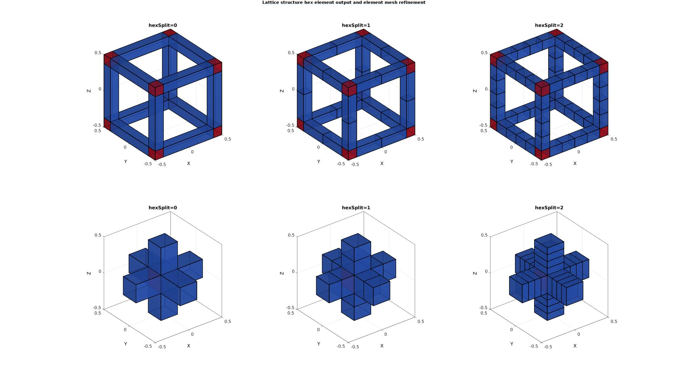 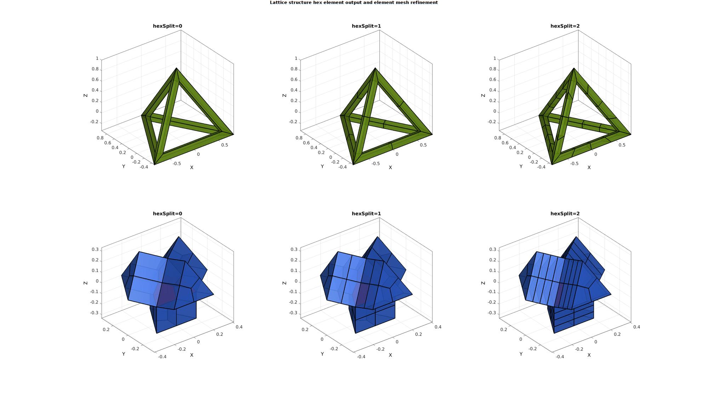
Example: Creating lattice structure variations through input mesh conversion/subdevission
cPar.shrinkFactor=0.25; cPar.numDigitKeep=5; cPar.meshType='quad'; cParSmooth.Method='HC'; cParSmooth.n=10; cFigure; c=1; for latticeSide=1:2 for testCase=1:3 switch testCase case 1 boxEl=[1 1 1]; [meshStruct]=hexMeshBox(boxDim,boxEl); E=meshStruct.E; V=meshStruct.V; F=meshStruct.F; Ft=F; Vt=V; [E,V]=subHex(E,V,1,1); case 2 boxEl=[1 1 1]; [meshStruct]=hexMeshBox(boxDim,boxEl); E=meshStruct.E; V=meshStruct.V; F=meshStruct.F; Ft=F; Vt=V; [E,V]=subHex(E,V,1,1); [E,V,~]=hex2tet(E,V,[],1); case 3 boxEl=[1 1 1]; [meshStruct]=hexMeshBox(boxDim,boxEl); E=meshStruct.E; V=meshStruct.V; F=meshStruct.F; Ft=F; Vt=V; [E,V,~]=hex2tet(E,V,[],1); [E,V]=tet2hex(E,V); end %Get boundary indices [F]=element2patch(E); %Patch data for plotting [indBoundary]=tesBoundary(F,V); %Boundary indices %Compute lattice cPar.latticeSide=latticeSide; cPar.indBoundary=indBoundary; [Fn,Vn,Cn]=element2lattice(E,V,cPar); % %Refine mesh % [Fn,Vn]=subQuad(Fn,Vn,1); % Cn=repmat(Cn,[4 1]); %Replicate color info % % %Smoothen % indRigid=Fn(Cn==1,:); % indRigid=unique(indRigid(:)); %Indices for boundary elements to hold on to % cParSmooth.RigidConstraints=indRigid; % if cParSmooth.n>0 % [Vn]=tesSmooth(Fn,Vn,[],cParSmooth); %Smoothen mesh % end %Visualize subplot(2,3,c); hold on; gpatch(Ft,Vt,0.5*ones(1,3),'k',0.25); gpatch(Fn,Vn,Cn,'k',1); colormap(cMap); axisGeom(gca,fontSize); camlight headlight; lighting flat; c=c+1; end end drawnow;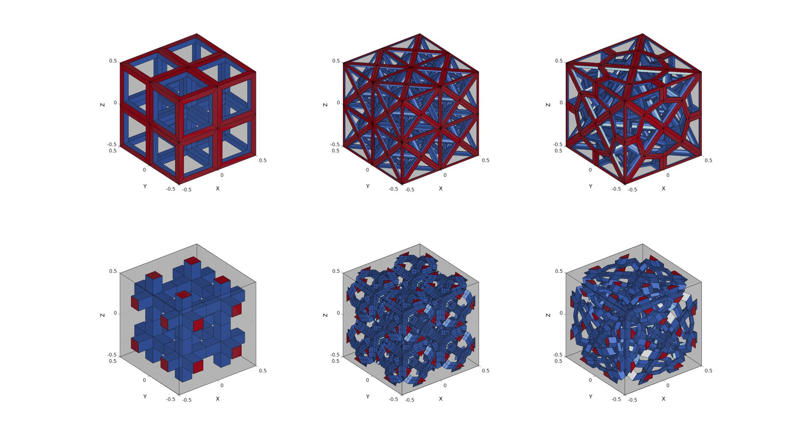
Example: Create lattice structures on arbitry input meshes
Below is an example of a general tetrahedral mesh
testCase=2; switch testCase case 1 [F,V,~]=geoSphere(2,1); % Building a geodesic dome surface model case 2 [F,V]=stanford_bunny('g'); %Bunny V_mean=mean(V,1); V=V-V_mean(ones(size(V,1),1),:); end
Using tetgen to create a tetrahedral mesh (see HELP_runTetGen)
stringOpt='-pq1.2AaY'; inputStruct.stringOpt=stringOpt; inputStruct.Faces=fliplr(F); inputStruct.Nodes=V; inputStruct.holePoints=[]; inputStruct.faceBoundaryMarker=ones(size(F,1),1); %Face boundary markers inputStruct.regionPoints=getInnerPoint(F,V); %region points inputStruct.regionA=tetVolMeanEst(F,V); inputStruct.minRegionMarker=2; %Minimum region marker [meshOutput]=runTetGen(inputStruct); %Run tetGen Fb=meshOutput.facesBoundary; Cb=meshOutput.boundaryMarker; V=meshOutput.nodes; CE=meshOutput.elementMaterialID; E=meshOutput.elements; F=meshOutput.faces; [indBoundary]=tesBoundary(F,V); %Boundary indices
%%%%%%%%%%%%%%%%%%%%%%%%%%%%%%%%%%%%%%%%%%%%% --- TETGEN Tetrahedral meshing --- 20-Jun-2019 14:47:13 %%%%%%%%%%%%%%%%%%%%%%%%%%%%%%%%%%%%%%%%%%%%% --- Writing SMESH file --- 20-Jun-2019 14:47:13 ----> Adding node field ----> Adding facet field ----> Adding holes specification ----> Adding region specification --- Done --- 20-Jun-2019 14:47:13 --- Running TetGen to mesh input boundary--- 20-Jun-2019 14:47:13 Opening /mnt/data/MATLAB/GIBBON/data/temp/temp.smesh. Delaunizing vertices... Delaunay seconds: 0.008246 Creating surface mesh ... Surface mesh seconds: 0.002539 Recovering boundaries... Boundary recovery seconds: 0.003694 Removing exterior tetrahedra ... Spreading region attributes. Exterior tets removal seconds: 0.002078 Recovering Delaunayness... Delaunay recovery seconds: 0.00194 Refining mesh... Refinement seconds: 0.074847 Optimizing mesh... Optimization seconds: 0.005915 Writing /mnt/data/MATLAB/GIBBON/data/temp/temp.1.node. Writing /mnt/data/MATLAB/GIBBON/data/temp/temp.1.ele. Writing /mnt/data/MATLAB/GIBBON/data/temp/temp.1.face. Writing /mnt/data/MATLAB/GIBBON/data/temp/temp.1.edge. Output seconds: 0.065301 Total running seconds: 0.1647 Statistics: Input points: 1520 Input facets: 3036 Input segments: 4554 Input holes: 0 Input regions: 1 Mesh points: 5861 Mesh tetrahedra: 32563 Mesh faces: 66644 Mesh faces on exterior boundary: 3036 Mesh faces on input facets: 3036 Mesh edges on input segments: 4554 Steiner points inside domain: 4341 --- Done --- 20-Jun-2019 14:47:14 %%%%%%%%%%%%%%%%%%%%%%%%%%%%%%%%%%%%%%%%%%%%% --- Importing TetGen files --- 20-Jun-2019 14:47:14 --- Done --- 20-Jun-2019 14:47:14
Create lattice structure
clear controlParameter controlParameter.shrinkFactor=0.2; %Strut sides are formed by shrinking the input mesh faces by this factor controlParameter.numDigitKeep=5; %used for merging nodes controlParameter.meshType='quad'; %desired output mesh type controlParameter.indBoundary=indBoundary; %indices of the boundary faces controlParameter.latticeSide=1; %1=side 1 the edge lattice, 2=side 2 the dual lattice to the edge lattice [Fs1,Vs1,Cs1]=element2lattice(E,V,controlParameter); %Get lattice structure
PLOTTING MODEL
%Selecting half of the model to see interior Y=V(:,2); YE=mean(Y(E),2); logicCutView=YE>mean(Y); [Fs,Cs]=element2patch(E(logicCutView,:),CE(logicCutView),'tet4'); cFigure; hold on; title('Cut view of tetrahedral mesh model','FontSize',fontSize); gpatch(Fb,V,0.5*ones(1,3),'none',0.5); gpatch(Fs,V,Cs,'k',1); camlight headlight; axisGeom(gca,fontSize); axis off; colormap(cMap); drawnow;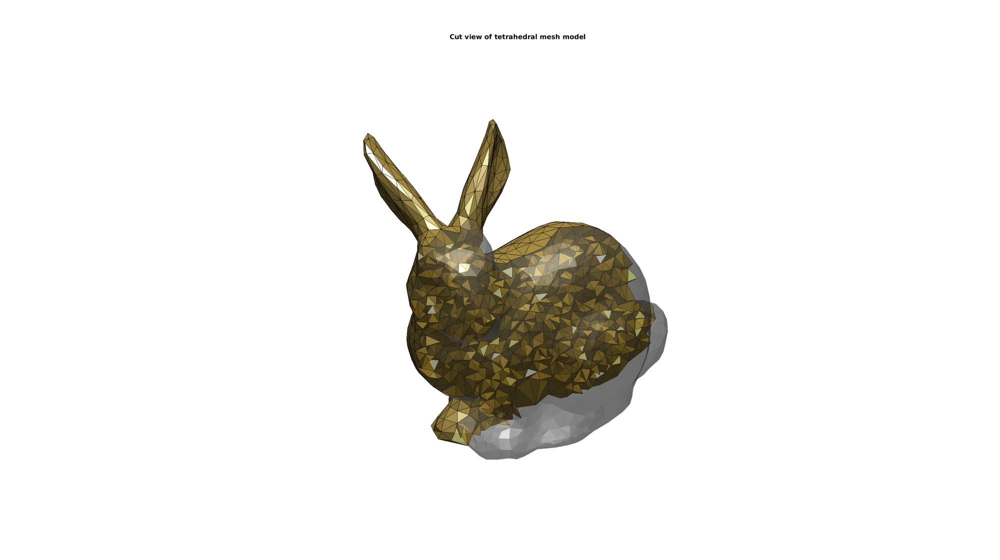
Visualize lattice structure
cFigure; hold on; title('Lattice structure on arbitrary input mesh','FontSize',fontSize); % gpatch(Fb,V,0.5*ones(1,3),'none',0.5); gpatch(Fs1,Vs1,Cs1,'none',1); camlight headlight; lighting flat; axisGeom(gca,fontSize); axis off; colormap(cMap); drawnow;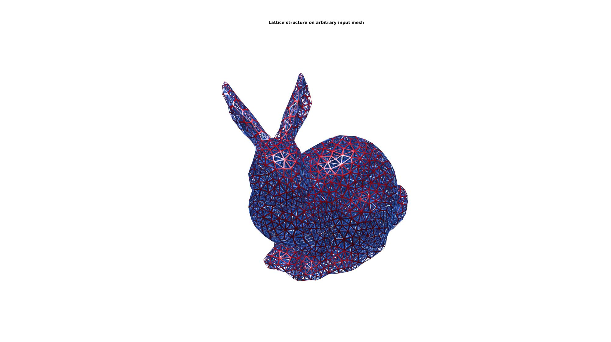

GIBBON www.gibboncode.org
Kevin Mattheus Moerman, gibbon.toolbox@gmail.com
GIBBON footer text
License: https://github.com/gibbonCode/GIBBON/blob/master/LICENSE
GIBBON: The Geometry and Image-based Bioengineering add-On. A toolbox for image segmentation, image-based modeling, meshing, and finite element analysis.
Copyright (C) 2019 Kevin Mattheus Moerman
This program is free software: you can redistribute it and/or modify it under the terms of the GNU General Public License as published by the Free Software Foundation, either version 3 of the License, or (at your option) any later version.
This program is distributed in the hope that it will be useful, but WITHOUT ANY WARRANTY; without even the implied warranty of MERCHANTABILITY or FITNESS FOR A PARTICULAR PURPOSE. See the GNU General Public License for more details.
You should have received a copy of the GNU General Public License along with this program. If not, see http://www.gnu.org/licenses/.